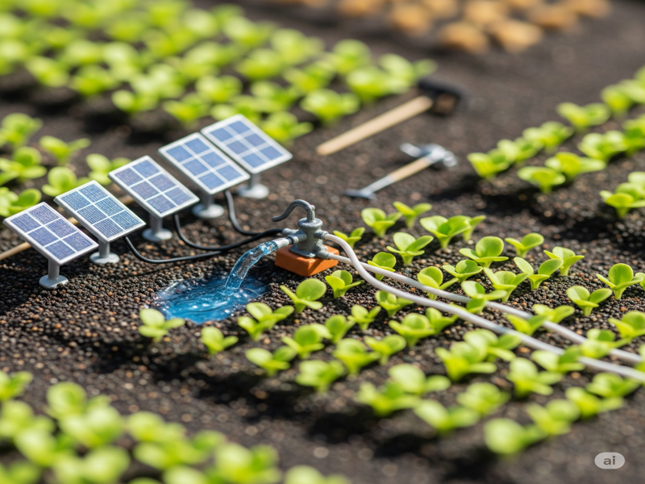
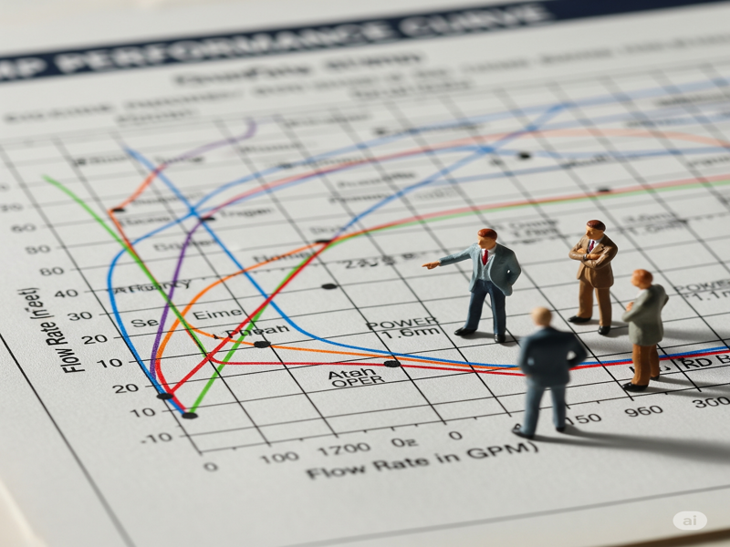
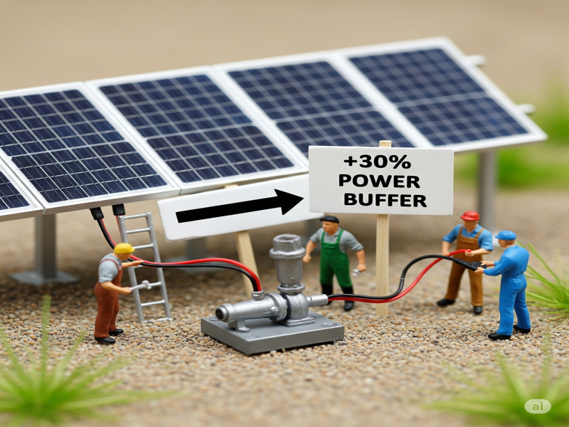

บทที่ 5: การประยุกต์ใช้กับปั๊มน้ำโซลาร์เซลล์
หนึ่งในการใช้งานโซลาร์เซลล์ที่คุ้มค่าและได้รับความนิยมสูงสุดในประเทศไทย คือระบบสูบน้ำเพื่อการเกษตร บทเรียนนี้จะสอนหลักการเบื้องต้นในการเลือกขนาดปั๊มและอุปกรณ์ให้เหมาะสมกับพื้นที่ของคุณ
5.1 รู้จักปั๊มน้ำโซลาร์เซลล์: ปั๊ม AC vs ปั๊ม DC
ปั๊มน้ำที่ใช้ในระบบโซลาร์เซลล์มี 2 ประเภทหลัก:
ปั๊มน้ำ DC (DC Pump)
- หลักการ: เป็นปั๊มที่ใช้ไฟฟ้ากระแสตรง (DC) สามารถต่อตรงกับแผงโซลาร์เซลล์ได้เลย (ผ่านกล่องควบคุม) โดยไม่ต้องใช้อินเวอร์เตอร์
- ข้อดี: ประสิทธิภาพสูงเนื่องจากไม่มีการสูญเสียพลังงานในการแปลงไฟ, เหมาะกับระบบขนาดเล็กถึงกลาง
- ข้อเสีย: อาจมีราคาแพงกว่าปั๊ม AC ในขนาดเดียวกัน, หาซื้อและซ่อมบำรุงได้ยากกว่า
ปั๊มน้ำ AC (AC Pump)
- หลักการ: เป็นปั๊มน้ำมาตรฐานที่ใช้กับไฟบ้าน (AC) หากต้องการใช้กับโซลาร์เซลล์ จะต้องมี "อินเวอร์เตอร์" เพื่อแปลงไฟ DC จากแผงให้เป็นไฟ AC ก่อน
- ข้อดี: เป็นปั๊มมาตรฐานที่หาซื้อง่าย, ราคาถูก, ซ่อมบำรุงง่าย
- ข้อเสีย: มีการสูญเสียพลังงานในขั้นตอนการแปลงไฟที่อินเวอร์เตอร์ ทำให้ประสิทธิภาพโดยรวมของระบบต่ำกว่าปั๊ม DC
5.2 การคำนวณเบื้องต้นสำหรับปั๊มน้ำ
การเลือกขนาดปั๊มที่ถูกต้อง ต้องพิจารณาจาก 2 ค่าหลักคือ อัตราการไหล (Q) และ แรงดันส่ง (Head)
อัตราการไหล (Flow Rate - Q)
- คืออะไร: คือปริมาณน้ำที่ปั๊มสามารถสูบได้ในหนึ่งหน่วยเวลา
- หน่วย: ลิตรต่อนาที (LPM), ลิตรต่อชั่วโมง (LPH), หรือลูกบาศก์เมตรต่อชั่วโมง (m³/h)
- การเลือก: ต้องคำนวณจากปริมาณน้ำทั้งหมดที่พืชหรือพื้นที่ของคุณต้องการในแต่ละวัน แล้วหารด้วยจำนวนชั่วโมงที่มีแดด đểหาอัตราการไหลที่ต้องการต่อชั่วโมง
แรงดันส่ง หรือ เฮด (Total Head - H)
- คืออะไร: คือ "กำลัง" ในการส่งน้ำของปั๊ม เพื่อเอาชนะอุปสรรคต่างๆ
- หน่วย: เมตร (m)
-
ประกอบด้วย:
- ความสูงแนวดิ่ง (Static Head): ระยะทางแนวดิ่งจากผิวน้ำไปยังจุดปล่อยน้ำที่สูงที่สุด
- แรงดันใช้งาน (Pressure Head): แรงดันที่ปลายท่อที่ต้องการ เช่น แรงดันที่หัวสปริงเกอร์ต้องการ (เช่น 2 บาร์ แปลงเป็นเฮดได้ประมาณ 20 เมตร)
- แรงดันสูญเสีย (Friction Loss): แรงเสียดทานที่เกิดขึ้นภายในท่อ ยิ่งท่อยาวและเล็ก ยิ่งมีการสูญเสียมาก
5.3 ตัวอย่างการออกแบบระบบสูบน้ำ
สมมติว่าเราต้องการสูบน้ำจากบ่อเพื่อไปรดน้ำต้นไม้ผ่านสปริงเกอร์
- หาความต้องการ: คำนวณหาอัตราการไหล (Q) และแรงดันรวม (H) ที่ต้องการ (ตามที่โปรแกรมของเราคำนวณให้)
- เลือกปั๊ม: นำค่า Q และ H ที่ได้ ไปเปิดดู "กราฟประสิทธิภาพปั๊ม (Pump Curve)" ของปั๊มรุ่นต่างๆ เพื่อเลือกรุ่นที่เหมาะสมที่สุด
- เลือกขนาดแผงโซลาร์: เมื่อได้ขนาดกำลังวัตต์ของปั๊มแล้ว (เช่น ปั๊ม 750W หรือ 1 HP) เราจะต้องเผื่อขนาดแผงโซลาร์ให้ใหญ่กว่ากำลังของปั๊มประมาณ 20-30% เพื่อให้แน่ใจว่ามีกำลังไฟฟ้าเพียงพอแม้ในวันที่แดดไม่แรงมาก
ขนาดแผงที่แนะนำ (Wp) ≈ กำลังวัตต์ของปั๊ม (W) × 1.3